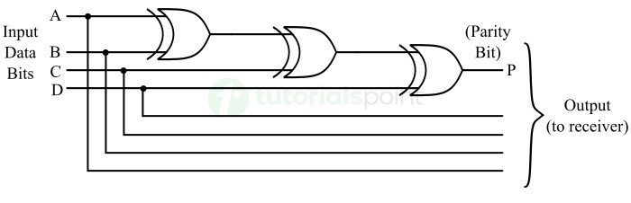
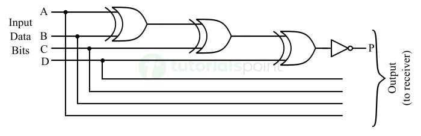
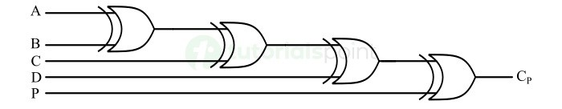
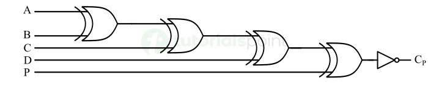

A parity generator is a combinational logic circuit designed to add an extra bit—called a parity bit—to a binary data word before it is transmitted. Its primary purpose is to enable error detection at the destination.
The goal is to make the total number of 1s in the complete message (data bits + parity bit) even.

The goal is to make the total number of 1s in the complete message odd.

| Total 1s in Data (4-Bit Input) |
Generated Parity Bit (P) | |
|---|---|---|
| Even Parity | Odd Parity | |
| 0 (Even) | 0 | 1 |
| 1 (Odd) | 1 | 0 |
| 2 (Even) | 0 | 1 |
| 3 (Odd) | 1 | 0 |
| 4 (Even) | 0 | 1 |
A parity checker is a combinational logic circuit deployed at the receiver end of a digital communication system. Its primary role is to inspect incoming data blocks to verify whether data corruption occurred during transmission.
This circuit verifies if the total count of 1s in the entire received block is even.

This circuit verifies if the total count of 1s in the entire received block is odd.

| Total 1s Received (Data + Parity Bit) |
Error Output (PEC) | |
|---|---|---|
| Even Checker | Odd Checker | |
| 0 (Even) | 0 (Valid) | 1 (Error) |
| 1 (Odd) | 1 (Error) | 0 (Valid) |
| 2 (Even) | 0 (Valid) | 1 (Error) |
| 3 (Odd) | 1 (Error) | 0 (Valid) |
| 4 (Even) | 0 (Valid) | 1 (Error) |
| 5 (Odd) | 1 (Error) | 0 (Valid) |